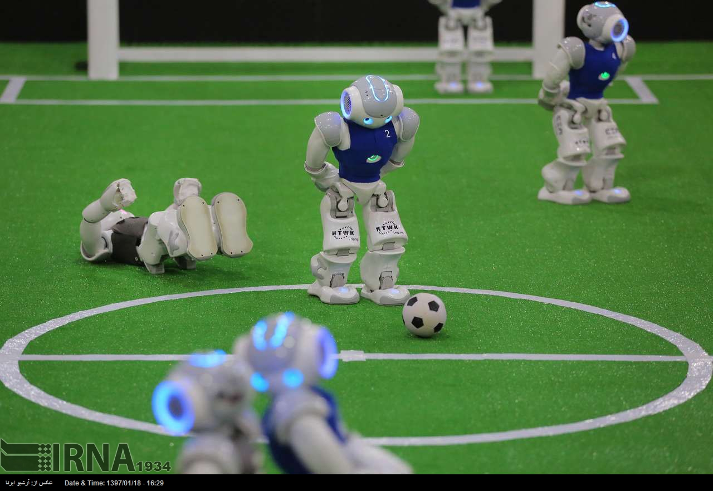
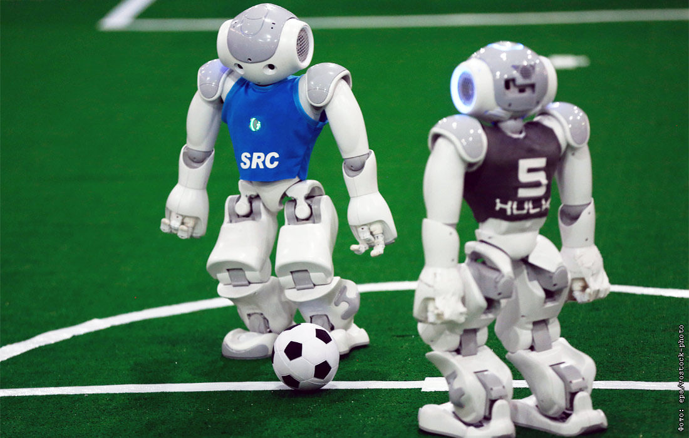

🔥 Шок! Захватывающий матч!
RoboCupSoccer Standard Platform League (ранее Four Legged League) — состязание роботов футболистов, когда все команды состоят из одинаковых роботов. Роботы работают полностью автономно, то есть без какого-либо контроля со стороны человека или компьютера. Изначально состязание проводились между роботами AIBO, позже к ним присоединились роботы Nao.


Международные соревнования среди роботов, первые из которых прошли в 1996 году. Целью является создание автономных роботов-футболистов для содействия научным исследованиям в области искусственного интеллекта.